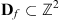

|
|
||||
|
|
Journal of Systems Architecture
Volume 53, Issue 4, April 2007, Pages 210-226 |
Result list | previous < 5 of 7 > next |
| ||||
|
|
|||
An efficient immersion-based watershed transform method and its prototype architecture
C. Rambabua,  , and I. Chakrabartib,
, and I. Chakrabartib,  , ,
, ,
aUbiquitous Computing and Virtual Reality Lab, GIST, 500 712, South Korea
bDepartment of E&ECE, IIT Kharagpur, West Bengal-721302, India
Received 18 September 2003; accepted 12 December 2005. Available online 1 December 2006.
Abstract
This paper describes an improved immersion-based watershed algorithm to compute the watershed lines for segmentation of digital gray scale images and its hardware implementation. The proposed algorithm is devoid of certain disadvantages inherent in a conventional immersion-based algorithm originally proposed by Vincent and Soille. Flooding of catchment basins from pre-determined regional minima and conditional neighborhood comparisons while processing the eight neighboring pixels of a labeled center pixel ensures thin continuous watershed lines. Reduced computational complexity and increased throughput compared to the conventional algorithm occurs from simultaneous determination of labels of various neighboring pixels. The complexity of the proposed algorithm is analyzed. The results of running both the proposed and the conventional algorithm on different test images clearly establish the superiority of the proposed algorithm. A prototype architecture designed to implement the proposed watershed algorithm has been modelled in VHDL and synthesized for Virtex FPGA. The FPGA implementation results show acceptable performance of the proposed architecture.
Keywords: Image segmentation; Watershed transformation; FIFO queue; FPGA implementation
Article Outline
1. Introduction
Image segmentation, which involves extraction of appropriate attributes from input images, is an important pre-processing step of image analysis. The general segmentation problem involves the partitioning of a given image into a number of homogeneous regions (spatially connected graphs of pixels). Although it is a difficult problem, several algorithms have been proposed for its solution. Among the existing algorithms [1], [2], [3], [4], [5] and [6], watershed transformation has proved to be a very useful and powerful tool in many different application fields. Although the initial applications of watershed algorithm were in the field of topography, they have been more popular in different fields like biomedical signal processing [7], medical image processing [8], computer vision [9] and video object coding [10].
To explain the principle of watershed construction, let us consider a gradient image obtained by applying an appropriate morphological gradient operation on a gray scale image as a topographic relief, where the gray scale value of a pixel denotes the altitude of that pixel. Let us imagine that the surface is flooded by water coming from the regional minima. Each pixel of this gradient image is assigned a label during the transformation carried out for the catchment basin of a regional minimum. This defines the influence zone of each of the regional minima. The watershed lines are defined as the lines separating the influence zones from each other. Approaches to computation of watersheds vary [6], [11], [12], [13], [14], [15] and [16], ranging from iterative methods to arrowing and flooding methods. Among these, there are methods which construct watershed lines [11], [13] and [15] and those which do not delimit the catchment basins by watersheds (0-width watershed lines) [14].
Among the broad classes of sequential algorithms for computing watershed transforms, an immersion-based watershed algorithm was proposed by Vincent and Soille [13]. This method examines all the pixels in an image at successive gray scale values, and operates in two stages, namely a sorting step followed by a flooding step. Utilizing a first-in-first-out (FIFO) data structure, the pixels at altitude h + 1 are processed after processing those at altitude h, starting from the lowest altitude. At each gray level, pixels are appended to the catchment basins located in their immediate neighborhood at lower gray levels. All pixels at the current gray level, that have at least one neighbor at a lower level, are put in a FIFO queue and assigned the label of the neighbor(s) with the lowest gray level. Whenever two floods originating from different catchment basins reach each other, a dam is built to prevent the basins from merging. This algorithm always produces incomplete watershed lines and isolated minima.
An alternative sequential watershed algorithm based on an ordered queue has been proposed by Meyer [14]. This algorithm determines the regional minima (single pixel or plateau) and starting from these regional minima, the recursive label propagation is performed using an ordered queue (embedding H FIFO queues, where 0 H 255, corresponding to 256 intensity levels). It yields a complete tessellation of the image into its homogeneous regions without producing any watershed lines. Finally, several shortest-path algorithms for the watershed transformation with respect to the topographical distance can be found in the literature [15] and [16]. These algorithms provide a straightforward way to find the watershed lines but require extensive computations. In general, the immersion-based methods are much faster than the shortest path-based algorithms.
Different algorithms have been proposed on standard sequential processors. Each watershed algorithm involves a trade-off between the speed and the data structure complexity. Unfortunately, the watershed computation is a considerably time-consuming task and therefore cannot suit real-time operations in most cases. Moga proposed a parallel algorithm [16] and its implementation on coarse grain architecture. In this algorithm, the image is split into equally sized blocks, each block being assigned to one processor. This implementation significantly improves processing time when data are uniformly distributed between different processors, which is not the case in many industrial applications. Real-time applications like moving object segmentation, traffic analysis and steel fissure analysis call for fast watershed computation. Dedicated hardware architecture in general would produce faster results compared to a software program executed on a general purpose processor hardware. Recently, some attempts [17], [18], [19] and [20] have been made for hardware realization of watershed algorithms.
In this paper, we propose an improved watershed algorithm based on the immersion-based algorithm due to Vincent and Soille [13] and its prototype architecture. In the proposed algorithm, flooding of the catchment basins starts from the pre-determined regional minima, during which the labels of the neighboring pixels are decided based on conditional neighborhood comparisons (involving 16 other pixels) and the geodesic distance from the outer pixels of the nearest plateau (in case of non-plateau labeling). As a result, always a continuous and thin watershed line can be found quickly. The proposed algorithm shows better computational complexity and throughput than the algorithm [13] due to Vincent and Soille as it is able to decide labels of 8 pixels at a time in contrast to the algorithm [13], which does so for a single pixel. Moreover, the proposed algorithm produces watershed lines possessing a uniform width of a single pixel in contrast to the algorithm [13] that may give rise to thick watershed lines. The proposed algorithm also derives its strength from the parallelization of the label propagation process involved in the flooding procedure. Results of executing both the conventional algorithm [13] and the proposed algorithm on several standard test images are given in the paper for comparison. Moreover, the present paper discusses about a prototype architecture developed to implement the proposed algorithm.
The remaining sections of the paper are organized as follows. Section 2 presents a detailed discussion, including analysis of complexity, of the proposed improved watershed computation algorithm. Section 3 gives some of the results produced by applying the proposed and the conventional methods on different standard images. A prototype architecture, which is developed to implement the improved algorithm, and its implementation results are described in Section 4. Finally, the paper is concluded in Section 5.
2. Proposed method
An improved immersion-based watershed algorithm is described in this section. The proposed algorithm consists of two stages, namely detection and labeling of the regional minima, and simulated immersion (flooding). The algorithm starts by detecting and labeling the initial seeds that is, the minima of the gradient, which characterize the regions of interest. The latter are defined as connected plateaus of pixels (plateau of minima) in the gradient image, which do not have neighboring pixels of lower gray level. Utilizing a FIFO data structure, the pixels at an altitude h + 1 are processed after processing those at altitude h. The flooding of the catchment basins (labeling of non-labeled pixels) starts from the pre-determined regional minima at the lowest value of h and proceeds in the increasing order of h, during which the labels of the neighboring pixels with higher or equal altitude are decided based on conditional neighborhood comparisons (involving 16 additional pixels) and the geodesic distance (lower distance) which is the distance from the nearest outer pixel of the plateau. All the labeled pixels at the current level h that have a non-labeled neighboring pixel are put in a FIFO queue. The queue is then processed. The pixels are then dequeued one at a time and then the labels of the non-labeled neighboring pixels at a higher or equal altitude are determined. The processing of neighboring pixels at a higher or equal altitude reduces the problem to calculating the geodesic skeleton of influence zone (SKIZ) [11].
Thus, the non-labeled pixels are assimilated into different components in an increasing order of gray levels. Inside the flat areas, which are not yet labeled and called plateaus of non-minima, components progress synchronously, so that they incorporate equal extents within the plateau. Consequently, a pixel on such a plateau is labeled along the shortest path completely included in the plateau to a lower downward brim of the plateau. Some useful notations are defined next, followed by a detailed description of the proposed algorithm.
2.1. Basic definitions
Let us consider a 2D digital gray scale image F whose domain is denoted as is a function assigning an integer value to each p Df. For each pixel p Df, F(p) is called the gray value or altitude of p (considering F as a topographical surface). Let G denote the underlying digital grid, which can be a square grid (with 4-connectivity or 8-connectivity) or a hexagonal grid (with 6-connectivity). G is a subset of . NG(p) stands for the neighbors of a pixel p on the grid G.
Definition
A pixel p Df is called an isolated minimum, if F(p) < F(q), q NG(p).
Definition
A pixel p Df is said to lie on a plateau P with altitude h in an image F, if q NG(p) with h = F(p) = F(q).
Definition
A pixel p Df is called an outer pixel of a plateau P, if p is on the plateau P and q NG(p) such that, F(p) > F(q).
Definition
A pixel p Df is called an inner pixel of a plateau P, if q NG(p), F(p) F(q).
Based on the above definitions, one can now define the plateaus of minima and non-minima, respectively.
Definition
A plateau of minima (or PM) is a connected plateau of inner pixels only. If the plateau contains a single pixel p such that F(p) < F(q), q NG(p), it is also a plateau of one (isolated) minimum.
Definition
A plateau of non-minima (or PN) is a connected plateau which has outer pixels, if p PN such that p is an outer pixel.
The measure of closeness of a pixel (belonging to a plateau) to a downward brim is the geodesic distance called lower distance as defined below.
Definition
The lower distance d of a pixel p is given by: d(p) = 0 if pixel p is a minimum; otherwise, it is equal to the length l of the shortest path between two pixels p and q in G that is (p = p0, p1, p2, …, pl−1, pl = q) such that i [1, l] (pi−1, pi) G, F(q) < F(p), and if l > 1, i [1, l − 1], F(pi) = F(pi−1).
2.2. Definition by “immersion”
An algorithmic definition of the watershed by simulated immersion has been proposed by Vincent and Soille [13]. Let be a digital gray-scale image, with the smallest and the largest gray values as hmin and hmax, respectively, in which the catchment basins of the pre-determined regional minima of F are expanded. Let Ch denote the union of the set of the catchment basins and their regional minima at level h. A connected component of the threshold set Th+1 can be an extension of a catchment basin in Ch+1. As defined in the following, Th stands for the threshold of F at gray level h:
Definition
The geodesic distance dA(p, q) between two pixels p and q in A is the length of the shortest of all the paths between p and q and is totally included in A, that is
Further, let MINh denote the union of all regional minima at an altitude h. This leads us to the following modified definition of watershed by immersion.
Definition
(Watershed by modified immersion)
2.3. Regional minima detection and labeling
In this procedure, a single raster scan has been employed, and two FIFO queues QPD (for plateau detection) and QPA (for plateau analysis) have been utilized as shown in Fig. 1. For each not yet labeled pixel p, its 4-connected or 8-connected neighborhood is inspected. Thus if all the neighbors are of higher gray level than p, then p is deemed to be an isolated minimum, and a label is assigned to it. Else, if this pixel belongs to a plateau, the plateau is scanned in a breadth-first order, and the visited pixels are correctly labeled with the current label, and inserted into the queue QPD for detection of plateau. The examination always starts from an inner pixel, which introduces the neighboring pixels of equal altitude in the list of candidates. A currently investigated candidate pixel may still qualify as an inner pixel; otherwise, it is an outer pixel. The lower distance of the outer pixel is 1, and inserted into queue QPA for analysis of plateau. After scanning the plateau, the queue QPA is not empty (non-minima plateau is detected), it is necessary to compute distance of inner pixels (from the outer pixels) and assign NARM (not a regional minimum) label to the present detected plateau for subsequent flooding.
Display Full Size version of this image (5K) Fig. 1. Regional minima detection and labeling process.
The segment of the algorithm for regional minima detection and its labeling is given in the form of pseudo-code in Procedure 1.
2.4. Flooding process
In the proposed scheme, the label propagation of the catchment basins starts from their regional minima according to the gray level h (hmin h hmax). The label propagation, which decides the labels of the neighboring (N1–N8) pixels with equal or higher altitude than the center pixel C and requires 16 additional supporting pixels (S1–S16), is illustrated in Fig. 2. Utilizing a single FIFO queue QI, the pixels at gray level h + 1 are processed after processing those at gray level h. Initialize the FIFO queue QI with the labeled pixels at level h which have at least one NARM or WRD (watershed) neighboring pixel with equal or higher altitude. Pixels are dequeued from the queue QI one at a time and the labels of NARM or WRD neighboring pixels (N1–N8) are decided next, based on the conditional neighborhood comparisons. If the neighboring pixels have the same altitude as the center pixel C, then the lower distance (as defined in Section 2.1) needs to be made use of to decide their label. Only those neighboring pixels which have a distance of 1 from the center pixel C, get labeled and the labeled pixels are inserted in the FIFO queue for recursive label propagation in the non-minima plateau. The label propagation from the present gray level h stops when the queue is empty. Next, the labeled pixels with gray value h + 1 are put into the queue QI. When all the gray levels have been visited (with h = hmax), the procedure of label propagation of the catchment basins from its regional minima is considered to be complete.
Display Full Size version of this image (33K) Fig. 2. Label propagation in proposed algorithm.
To decide the labels of a pixel Ni, i = 1, 2, … ,8, the 8-connected neighbors of Ni (which are also the neighbors of the center pixel C) and the 8-connected supporting pixels of Ni are considered and processed as follows. The label of the pixel N1 say is decided as follows. If the condition (viz. the gray level of N1 with NARM or WRD (watershed) label being greater than or equal to that of the center pixel C) is satisfied, then one would consider the neighboring pixels namely N2, N4, S1, S2, S3, S6 and S8 which would then be compared with the pixel N1. As illustrated in Fig. 3, four different cases can occur for deciding the label of p, which are as follows:
(1) If p has no adjacent pixel with lower altitude, then the pixel p will acquire the label from C.
(2) If p has adjacent neighboring pixels q with equal or lower altitude and are not yet labeled, then the pixel p is labeled with WRD.
(3) If p has adjacent neighboring pixels q with equal or lower altitude and have the same label as that of the center pixel C, then the pixel p will obtain the label from pixel C.
(4) If p has at least one adjacent neighboring pixel q with equal or lower altitude and has the label different from the center pixel C, then the WRD label is assigned to it.
Display Full Size version of this image (39K) Fig. 3. Illustrating the four conditions, which can occur during the label propagation from center pixel C to its neighboring pixel p.
The pseudo-code of the immersion phase of the proposed algorithm is presented in Procedure 2.
2.5. Complexity analysis
Let us denote by n the number of image pixels in the gray scale image F whose domain is denoted as , and G is a subset of . NG(p) stands for the neighbors of a pixel p on the grid G.
2.5.1. Regional minima detection and labeling
Let p1, p2, …, pP be P plateaus, each pi having ni pixels and PN be the number of detected non-minima plateaus. Total number of comparisons for regional minima detection and labeling is
2.5.2. Sorting step
The present sorting technique has the advantage of requiring 2n “look and do” operations – one for determining the frequency distribution and the other for the pixel assignment.
2.5.3. Flooding process
Let l0, l1, …, lH−1 be the H connected gray levels in the image F; moreover, let lj have mj pixels which have at least one NARM neighboring pixel. Let C be the present center pixel and N1, N2, …, N8 the 8-connected neighbors of the center pixel. The number of comparisons for deciding the labels of the neighboring pixels (N1–N8) of the center pixel C by using conditional comparisons:
2.6. Analysis of conventional algorithm [13]
The number of comparisons in the sorting step are the same as that in the proposed algorithm. In the flooding process, each pixel is scanned thrice on an average in case of Vincent–Soille algorithm [13]. Thus the computational complexity of the conventional watershed algorithm (on an average) is
3. Experimental results
The improved algorithm has been simulated under SUN Solaris 8 operating system with 750 MHz Ultra SPARK III Cu. Watershed transformation usually produces over-segmentation due to additive noise in natural scene images. To alleviate this problem, each image data were first pre-processed and the multi-scale gradient operator [22] with different threshold values (h) was applied, which effectively enhanced the blurred edges and reduced the number of local minima. Table 1 shows that the improved algorithm is more efficient than the existing algorithm due to Vincent [13]. It may be mentioned here that the presence of a large number of plateaus in case of some image like Table Tennis and Steel Fissure accounts for considerably less computation time by the proposed algorithm relative to Vincent–Soille algorithm, as shown in Table 1. Also, the segmentation results are obtained for various threshold values (h). Fig. 4 shows that an increase in the threshold value (h) leads to a reduction in the number of homogeneous regions. Fig. 5 depicts the variation of the computation time while running the proposed and the conventional algorithm for different values of h. The results of Peppers, Washington_ir, Head, Lena and Table Tennis images and their corresponding watershed images are shown in Fig. 6, Fig. 7, Fig. 8, Fig. 9 and Fig. 10, respectively. From the segmentation results, the continuous and thin closed contours can be clearly identified.
Computation times (in s) for different image data on SUN Solaris 8 operating system with 750 MHz Ultra SPARC III
Test image Threshold value (h) Number of regions (R) Time (s) Vin’91 Proposed Lena (256 × 256) 12 64 0.37 0.35 Table tennis (352 × 240) 12 25 0.42 0.24 Peppers (256 × 256) 15 58 0.38 0.36 Cermet (256 × 256) 30 62 0.37 0.25 Washington_ir (250 × 250) 16 47 0.31 0.25 Head (176 × 172) 10 36 0.14 0.11 Steel fissure (360 × 290) 15 10 0.47 0.30 Blood cells (350 × 212) 26 21 0.20 0.19
Display Full Size version of this image (31K) Fig. 4. Number of homogeneous regions for different threshold value (h).
Display Full Size version of this image (30K) Fig. 5. Computation time while running the proposed and conventional algorithm for different threshold value (h (due to Vincent)).
Display Full Size version of this image (42K) Fig. 6. (a) Original Peppers image. (b) Morphological multi-scale gradient operation on Peppers image with a threshold value of 12. (c) Segmentation produced by Vincent’91 watershed algorithm. (d) Segmentation produced by the proposed watershed algorithm.
Display Full Size version of this image (36K) Fig. 7. (a) Original Washington_ir image. (b) Morphological multi-scale gradient operation on Washington_ir image with a threshold value of 16. (c) Segmentation produced by Vincent’91 watershed algorithm. (d) Segmentation produced by the proposed watershed algorithm.
Display Full Size version of this image (40K) Fig. 8. (a) Original Head image. (b) Morphological multi-scale gradient operation on Head image with a threshold value of 10. (c) Segmentation produced by Vincent’91 watershed algorithm. (d) Segmentation produced by the proposed watershed algorithm.
Display Full Size version of this image (48K) Fig. 9. (a) Original Lena image. (b) Morphological multi-scale gradient operation on Lena image with a threshold value of 12. (c) Segmentation produced by Vincent’91 watershed algorithm. (d) Segmentation produced by the proposed watershed algorithm.
Display Full Size version of this image (29K) Fig. 10. (a) Original Table Tennis image. (b) Morphological multi-scale gradient operation on tennis image with a threshold value of 12. (c) Segmentation produced by Vincent’91 watershed algorithm. (d) Segmentation produced by the proposed watershed algorithm.
4. Proposed architecture
The present section describes the hardware architecture that implements the improved watershed algorithm proposed in the previous section. The block diagram of the overall architecture that implements the improved watershed algorithm is shown in Fig. 11. This architecture consists of two FIFO queues, neighborhood address generation block (NAG BLOCK), supporting address generation block (SAG BLOCK), histogram and cumulative distribution block, plateau detection block, plateau analysis block, lower distance block and four memory modules, which are meant to the hold input image, the output image of labels, the distance image and to hold the addresses of the pixels as the immersion starts. In addition, it consists of a control unit (FSM) which generates the read/write signals for the RAMs and the FIFOs, and set/reset for data processing blocks.
Display Full Size version of this image (101K) Fig. 11. Functional block diagram of the proposed watershed transform architecture.
Raster scan can be performed by using the memory address counter. A control signal scan_comp is generated, when the memory counter reaches the last address (max_image_size) of image. The wave length counter is used to assign the proper distance during the lower distance computation process. In addition, the gray level counter is used to select the pixel frequency during process of the cumulative distribution. The NAG BLOCK generates the neighborhood addresses of the center pixel. The SAG BLOCK generates the 16 supporting pixel addresses from the eight neighboring pixel addresses, which are generated by the NAG BLOCK. The plateau detection block detects the neighbors that have the same intensity value as that of the center pixel. The detected pixels, which can be further explored are enqueued in FIFO_Q1. The plateau analysis block compares the center pixel with the neighboring pixels and decides the label of the plateau. The histogram and cumulative distribution functional block is used to sort the pixel addresses according to the gray levels. The conditional neighbor comparison block decides the labels of the neighboring pixels based on four different cases discussed in Section 2.4. Parallelism has been explored in this block, which accommodates the eight processing elements (PE) involved in comparing both the intensities of the neighboring pixels and the supporting pixels with that of the corresponding center pixel.
The sequence of operations taking place in the data processing unit is controlled by the control signals generated by the control unit (FSM). The control signals fall into three broad categories, which are concerned with the tasks of memory address generation, data transfer and processing. The data on the data bus is transferred under the control of the data transfer signals to different registers present in the data processing blocks. The control signals for processing includes those for achieving the jobs of plateau detection, plateau analysis, histogram and cumulative distribution, lower distance and conditional neighbor comparison. The functional principal modules of the architecture are described as follows.
4.1. FIFO queue
The schematic diagram of the synchronous FIFO is shown in Fig. 12. This can be designed by using a Dual-Port RAM. Two binary counters are used as both the read and write address counters. To perform a read, the read enable signal is driven high prior to a rising clock edge. The read data signal will be presented on the output during the next clock cycle. To preform a write, the write data must be present on the inputs, and the write enable signal must be driven prior to the rising clock edge. As long as the full flag is not set, data will be written into the FIFO. A FIFO counter is added for convenience, to determine the FIFO contents. The empty flag is set when the fifo_count is zero. The performance of the 255 × 8 FIFO as implemented on a XILINX XCV400HQ240 device is limited to 139.76 MHz. It utilizes 1% of CLB slices.
Display Full Size version of this image (25K) Fig. 12. The schematic diagram of FIFO implementation.
4.2. NAG Block
The neighborhood addresses are generated in parallel through addition/sub-traction of the Image_Width and the C_address as shown in Fig. 13a. The schematic diagram of N1 address generation module is shown in Fig. 13b. The circuit blocks labeled ADD and 2′COMP_SUB are used to generate the neighbor pixel address from the center pixel address. The REM is a remainder circuit which is used to find the validity of the generated neighbor address. If the center pixel belongs to a boundary, some neighbor addresses may be incorrectly computed. To prevent this, the remainder of the C_address and the Image_Width is computed. The remainder shows the validity of the neighboring pixel as the read_flag is generated. The performance of NAG BLOCK is limited to 26.92 MHz in XCV400HQ240. It utilizes 6% of slices.
Display Full Size version of this image (9K) Fig. 13. (a) The block diagram of the NAG Block. (b) Schematic diagram for N1 address generation block.
4.3. Histogram and Cumulative Distribution Block
The various labeled blocks following the DATA_RAM namely H_COUNT, DECODER 1 × 256, Register bank (RB), INR, ACC and FSM are grouped as the histogram and cumulative distribution block (dotted line in Fig. 14). The histogram and cumulative distribution process consists of two sequential stages. The process begins by accumulating the occurrences of the pixel gray values in the Register bank (RB). Next, the cumulative distribution is performed. The blocks labeled ADDR_COUNT, DATA_RAM, DECODER, RB, MUX, and INR are used for histogram computation. The register bank (RB) is addressed by the gray scale value of the pixel from the DATA_RAM. The increment (INR) block reads the data from the selected register, increments and writes back the contents of the register. The read-modify-write cycle takes two clock cycles.
Display Full Size version of this image (14K) Fig. 14. Schematic diagram for Histogram and Cumulation distribution Block.
The labeled blocks H_COUNT, RB, DECODER, MUX, and ACC are used for accomplishing the cumulative distribution process. The H_COUNT is used to address the register bank (RB) during the cumulative distribution process. The accumulator (ACC) reads the data from the selected register, accumulates and writes back the contents of the register. After the cumulative process, the contents of the register bank (RB) provide the starting memory addresses of the pixel gray levels in the SORT DATA RAM. The control unit FSM is a synchronous finite state machine which controls the histogram and cumulative distribution block by providing the appropriate control signals, timing signals and set/reset signals.
Total number of clock cycles for histogram and cumulative distribution process is 2 × n + 512 where n is the number of pixels in the input image. The performance of Histogram and Cumulative Distribution Block is limited to 48.43 MHz in XCV400HQ240. It utilizes 6% of CLB slices and 9% of the registers.
4.4. Plateau Detection Block
The plateau detection is performed by comparing the center pixel data (C_DATA) with each of its 8 nearest neighbors (N_DATA_1, …, N_DATA_8) in parallel, as depicted in Fig. 15a. The schematic diagram of the PD_N (plateau detection for single neighbor) block is shown in Fig. 15b. The f_w_flag signal is generated when the neighbor pixel data (N_DATA) and the label image data (N_LABEL) are equal to the center pixel data (C_DATA) and the initialized value of the label image INIT, respectively. It indicates that the neighboring pixel belongs to its plateau and not visited previously. This control signal invokes the control unit, so that the control unit can generate necessary signal to enqueue the address of the neighbor pixel into FIFO_Q1. The performance of the Plateau Detection Block is limited to 81.05 MHz in XCV400HQ240. It utilizes 1% of CLB slices and 1% of the registers.
Display Full Size version of this image (11K) Fig. 15. (a) The block diagram of the Plateau Detection Block. (b) Schematic diagram for PD_N block.
4.5. Plateau Analysis Block
The schematic diagram shown in Fig. 16 is used to detect whether the center pixel belongs to the non-minima plateau. The control signal plateau_analysis_flag is generated when the neighbor pixel data (N_data) is less than the center pixel data (C_DATA) and the center pixel data of distance image (C_DIST) is equal to DIST_INIT. It indicates that the center pixel belongs to the non-minima plateau and it is an outer pixel. This control signal invokes the control unit, which can then generate the necessary signal to enqueue the address of the center pixel into FIFO_Q2. The performance of the Plateau Detection Block is limited to 58.36 MHz in XCV400HQ240. It utilizes 1% of CLB slices and 1% of the registers.
Display Full Size version of this image (9K) Fig. 16. The schematic diagram of the Plateau Analysis Block.
4.6. Lower Distance Block
The logic module shown in Fig. 17 detects whether the neighboring pixel belongs to a non-minima plateau for which no distance is assigned. The control signal l_w_flag is generated when the neighboring pixel data (N_DATA) and the distance image data (N_DIST) are equal to the center pixel data (C_DATA) and the initialized value of the distance image DIST_INIT, respectively. It indicates that the neighboring pixel belongs to a non-minima plateau and no distance is assigned it. This control signal invokes the control unit, which can then generate the necessary signal to enqueue the address of the neighboring pixel into FIFO_Q2 for further exploration and assignment of the current distance value of the WAVE_LENGTH_COUNT to the distance image pixel. The performance of the Plateau Detection Block is limited to 62.33 MHz in XCV400HQ240.
Display Full Size version of this image (11K) Fig. 17. The schematic diagram of the Lower Distance Block.
4.7. Conditional Neighborhood Comparison Block
The conditional neighborhood comparison block decides the labels of the neighboring pixels based on the neighborhood comparison. The 3 × 3 2-D CA (2-dimensional cellular automata) is used in the conditional neighborhood comparison process as shown in Fig. 18a. It accommodates the cells (PE) involved with comparing the intensities as well as labels of the neighboring pixels (from the adjacent cells) and the supporting pixels (S) with that of the center pixel (C).
Display Full Size version of this image (35K) Fig. 18. (a) The 3 × 3 2-D CA for conditional neighborhood comparison. (b) Nine-neighborhood cell dependency.
Cellular automata [23] are a special class of automata that are made of simple cells each of which is a simple finite state machine. A 2-D CA is a generalization of a 1-D CA, where the cells are arranged in a two-dimensional grid with connections among the neighboring cells. The states of the cells are updated in parallel according to a local rule. That is, the state of a cell at a given time step depends only on itself and the states of its eight nearest neighbors existing at the previous time step. The neighborhood function specifies the next state of the cell Ci, j in terms of itself and the states of its 8 nearest neighbors (8-neighborhood dependency, Fig. 18b). That is, the state of the (i, j)th cell of a 2-D CA is given by
One may consider here a fully parallel synchronous 3 × 3 2-D CA model with eight processing elements for eight neighbors of the center pixel. The functional block diagram of a typical cell (PE) is given in Fig. 19. The data bus loads the input data to a BUFFER inside a PE. The labeled C_N module block is used to detect the validity of the deciding neighboring pixel (N_DATA). The validity signal c_n_comp_flag is generated when the neighboring pixel (N_DATA) has its intensity value greater than that of the center pixel (C_DATA), the distance (N_DIST) equal to one more than the center pixel distance (C_DIST) and the neighboring pixel label (N_LABEL) is equal to NARM (not a regional minima). The blocks N_N1, N_N2, …, N_N7 are used to decide the label of the neighboring pixel (N_DATA) based on four different conditions (as depicted in Fig. 3). A load_flag signal is generated when one of the four conditions is satisfied. This enables the state register to load the neighbor pixel label (N_LABEL) with the center pixel label (C_LABEL). The performance of the conditional neighborhood comparison block is limited to 44.46 MHz in XCV400HQ240.
Display Full Size version of this image (64K) Fig. 19. The schematic diagram for deciding the label of a neighboring pixel (PE).
4.8. FPGA implementation
The proposed watershed architecture has been modelled in VHDL [24] and then implemented in XILINX Virtex FPGA device. An image size greater than 16 × 16 requires more than one chip for its implementation. Due to limitations of the memory on the virtex device, the performance of the FPGA has been limited to an image of the size 16 × 16. So, in this design the block RAMs are configured with 8-bit data lines and 8-bit address lines.
The entire design is simulated, synthesized at gate level and then implemented on the device XCV400HQ240. FPGA design summary of the entire architecture and the major functional blocks is shown in Table 2. The Virtex user programmable gate array comprises three major configurable elements, namely configurable logic blocks (CLBs), block RAMs (BRAMs) and input/output blocks (IOBs). CLBs are the primary logic elements, which provides the functional elements for constructing logic. Each CLB is made of two slices, which contain two LUTs and two D flip-flops. The Virtex series has a system of block RAMs, which allows the use of the chip for limited RAM operations such as FIFO implementation or basic dual port RAM usage. The IOBs provides the interface between the device pins and the CLBs. The Virtex architecture also includes the delay-locked loop (DLL) to eliminate skew between the clock input pad and the internal clock-input pins throughout the device (see Table 2).
FPGA device utilization summary
Hardware elements Usage Number of slices 2503 out of 4800 (52%) Slice registers 2481 out of 9600 (25%) Block RAMs 6 out of 20 (30%) IOBs 36 out of 166 (22%) GCLKs 1 out of 4 (25%) Total equivalent gate count: 102,546 Maximum frequency of operation of entire design: 48.52 MHz Maximum frequency of operation of FIFO Queue: 139.76 MHz Maximum frequency of operation of NAG Block: 26.92 MHz Maximum frequency of operation of Plateau Detection Block: 81.05 MHz Maximum frequency of operation of Plateau Analysis Block: 58.35 MHz Maximum frequency of operation of Lower Complete Block: 62.33 MHz Maximum frequency of operation of HCD Block: 48.43 MHz Maximum frequency of operation of CNC Block: 44.56 MHz
5. Conclusions
The present paper proposes an improved watershed transform method based on simulated immersion and its prototype architecture. The proposed method is free of several disadvantages encountered by a conventional algorithm originally proposed by Vincent and Soille. The flooding mechanism in the proposed algorithm starts from pre-determined regional minima and is based on conditional neighborhood comparisons while dealing with the pixels surrounding a labeled center pixel. As a result, it always gives rise to thin continuous watershed lines as opposed to thick discontinuous lines which result from applying Vincent–Soille algorithm. The proposed algorithm also incorporates ability to decide labels of neighboring pixels at the same time. It demonstrates reduced computational complexity and increased throughput compared to the conventional algorithm. The complexity of the proposed algorithm has been analyzed. Segmentation of various images produced by application of the proposed method and the conventional one are presented in the paper for comparison. A prototype architecture for the proposed algorithm has been implemented in Xilinx FPGA. As the Xilinx Virtex device has limited on-chip memory, this design has been verified for an image of 16 × 16. The FPGA implementation results are given in the paper.
References
[1] R. Haralick and L. Shapiro, Image segmentation techniques, computer vision, graphics, Image Processing 29 (1985), pp. 100–132. Abstract | PDF (11487 K) | View Record in Scopus | Cited By in Scopus
[2] J. Canny, A computational approach to edge detection, IEEE Transactions on Pattern Analysis and Machine Intelligence PAMI-8 (1986), pp. 679–698. View Record in Scopus | Cited By in Scopus
[3] S. Chen, W. Lin and C. Chen, Split-and-merge image segmentation based on localized feature analysis and statistical tests, computer vision, graphics, Image Processing 53 (1991), pp. 457–475. SummaryPlus | Full Text + Links | PDF (3918 K)
[4] R. Dubes and A. Jain, Random field models in image analysis, Journal of Applied Statistics 16 (1989) (2), pp. 131–164.
[5] N. Pal and S. Pal, A review on image segmentation techniques, Pattern Recognition 26 (1993), pp. 1277–1294. SummaryPlus | Full Text + Links | PDF (1949 K) | View Record in Scopus | Cited By in Scopus
[6] Jos B.T.M. Roerdink and Arnold Meijster, The watershed transform: definitions, algorithms and parallelization strategies, Fundamenta Informaticae 41 (2001), pp. 187–228.
[7] H. Ancin, T.E. Dufresne, G.M. Ridder, J.N. Turner, B. Roysam, An improved watershed algorithm for counting objects in noisy, anistropic 3D biological images, in: Proceedings of IEEE International Conference on Image Processing Vol. III, Washington, DC, 1995, pp. 172–175.
[8] S. Wegner, T. Harms, H. Oswald, E. Fleck, Medical image segmentation using the watershed transformation on graphs, in: Proceedings of International Conference on Image Processing, vol. 3, Lausanne, Switzerland, 1996, pp. 37–40.
[9] L.A. Gee, Segmentation of range images using morphological operators: review and examples, in: SPIE Conference on Intelligent Robots and Computer Vision XIV, vol. 2588, Philadelphia, PA, 1995, pp. 734–746.
[10] D. Wang, Unsupervised video segmentation based on watersheds and temporal tracking, IEEE Transactions on Circuits and Systems for Video Technology 8 (1998) (5), pp. 539–546. Full Text via CrossRef | View Record in Scopus | Cited By in Scopus
[11] S. Beucher, C. Lantuejoul, Use of watersheds in contour detection, in: International Workshop on Image processing, Real Time Edge and Motion Detection/Estimation, Rennes, France, 1979, pp. 2.1–2.12.
[12] S. Beucher, Segmentation d‘images et morphologie mathèmatique, Ph.D. thesis, School of Mines, Paris (June 1990).
[13] L. Vincent and P. Soille, Watersheds in digital spaces: an efficient algorithm based on immersion simulations, IEEE PAMI 13 (1991) (6), pp. 583–598. Full Text via CrossRef | View Record in Scopus | Cited By in Scopus
[14] S. Beucher and F. Meyer, The morphological approach to segmentation: the watershed transformation, Mathematical Morphology in Image Processing, Marcel Dekker Inc, New York (1993), pp. 433–481.
[15] F. Meyer, Topographic distance and watershed lines, Signal Processing 38 (1994) (1), pp. 113–125. SummaryPlus | Full Text + Links | PDF (997 K) | View Record in Scopus | Cited By in Scopus
[16] A.N. Moga, Parallel watershed algorithms for image segmentation, Ph.D. thesis, Tampere University of Technology, Tampere, Finland (February 1997).
[17] D. Noguet, A massively parallel implementation of the watershed based on cellular automata, in: Proceedings of IEEE International Conference on Application-Specific Systems, Architectures and Processors, 1997, pp. 42–52.
[18] C.J. Kuo, S.F. Odeh, M.C. Huang, Image segmentation with improved Watershed Algorithm and its FPGA implementation, in: Proceedings of IEEE International Symposium on Circuits and Systems, vol. 2, 2001, pp. 753–756.
[19] C. Rambabu, I. Chakrabarti, A. Mahanta, An efficient architecture for an improved watershed algorithm and its fpga implementation, in: Proceedings of IEEE International Conference on Field Programmable Technology, Hong Kong, 2002, pp. 370–373.
[20] C. Rambabu, T.S. Rathore, I. Chakrabarti, A new watershed algorithm based on hill climbing technique for image segmentation, in: Accepted for presentation at IEEE TENCON’03, Bangalore, India, 2003.
[21] C. Lantuejoul and F. Maisonneuve, Geodesic methods in quantitative image analysis, Pattern Recognition 17 (1984), pp. 177–187. SummaryPlus | Full Text + Links | PDF (681 K) | MathSciNet | View Record in Scopus | Cited By in Scopus
[22] D. Wang, A multi-scale gradient algorithm for image segmentation using watersheds, Pattern Recognition 678 (1997) (12), pp. 2043–2052. SummaryPlus | Full Text + Links | PDF (1579 K) | View Record in Scopus | Cited By in Scopus
[23] P.P. Chaudhuri, D.R. Chowdhury, S. Nandi, S. Chattopadhyay, Additive Cellular Automata Theory and Applications, vol. 1, IEEE Computer Society Press, Los Alamitos, California, 1997, pp. 274–313 (Chapter 10).
[24] IEEE Standard VHDL Language Reference Manual, The Institute of Electrical and Electronics Engineers, 1993.
Vitae
C. Rambabu received his B.E. degree in Electronics and Telecommunication Engineering from Andhra University, India in 1995, M.Tech. degree in Electronics and Communication Engineering from Indian Institute of Technology (IIT) Kharagpur, India in 1998 and Ph.D. from IIT Guwahati, India in 2005. He is currently employed as a Research Scientist at GIST U-VR lab, South Korea. His areas of interest are image/video processing, VLSI architectures for digital signal processing, computer vision and vision-based interactive interface systems. He has published several papers in international journals and conferences in these areas. |
Indrajit Chakrabarti received his B.E. and M.E. degrees in Electronics and Telecommunication Engineering from Jadavpur University, India, in 1987 and 1990. Subsequently, he received Ph.D. from Indian Institute of Technology (IIT) Kharagpur, India in 1997. From 1998 to 2004, he worked as an Assistant Professor and later as an Associate Professor in the Department of Electronics and Communication Engineering, IIT Guwahati. He is presently serving as an Associate Professor in the Department of Electronics and Communication Engineering, IIT Kharagpur. His areas of interest include VLSI architectures for image processing, digital signal processing and telecommunication. |
|
Journal of Systems Architecture
Volume 53, Issue 4, April 2007, Pages 210-226 |
Result list | previous < 5 of 7 > next |
|
|


")